작업 화면 · 새 페이지 · 제목과 소개 · 안내 상자
새 학습노트 열기
배운 내용을 한곳에서 다시 찾을 홈을 만듭니다. Notion에 로그인한 작업 화면에서 왼쪽 위 사이드바 열기를 누릅니다. 사이드바 위쪽의 새 페이지 아이콘을 누르고 페이지를 선택하세요. 새 제목 칸에 아래 이름을 적고 Enter를 눌러 본문으로 내려갑니다. 기존 개인 페이지를 고치지 않고 새 페이지에서 시작합니다.
내 학습 노트
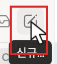
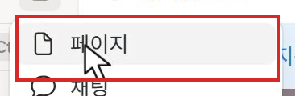
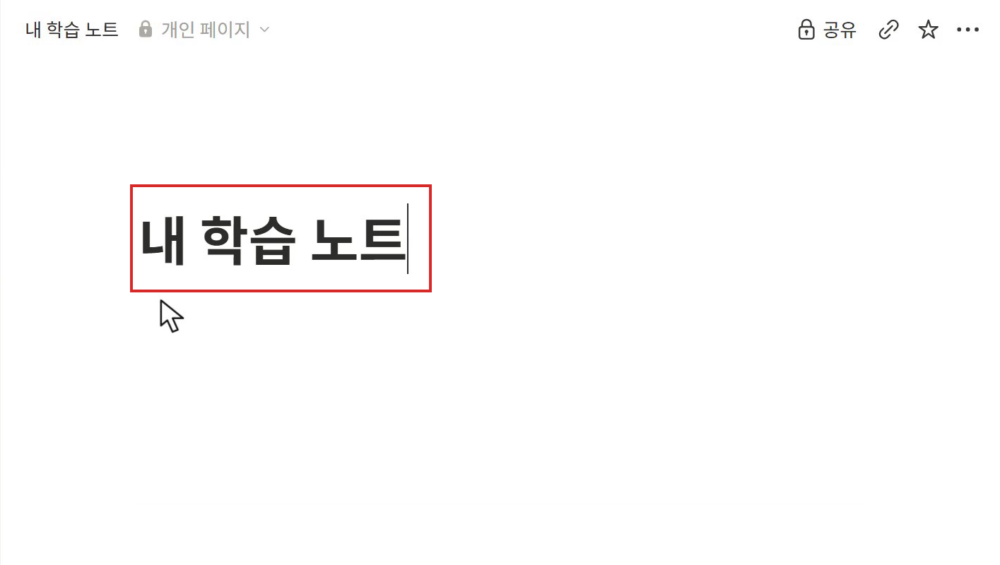
확인새 페이지 제목과 사이드바의 페이지 이름이 내 학습 노트입니다.
다음 단계 →홈의 소개 적기
왼쪽 위 사이드바 닫기 버튼으로 목록을 닫습니다. 제목 아래 빈 줄에 소개를 적고 Enter를 누르세요. 제목은 페이지 이름이고 본문은 내용을 쓰는 곳입니다. 글 왼쪽에 마우스를 올리면 점 여섯 개 손잡이가 나타납니다. 이 손잡이가 붙은 글·그림 한 덩어리를 블록이라고 합니다.
관심 있는 주제를 모으고, 배운 내용을 나만의 방식으로 쌓아 갑니다.
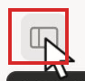
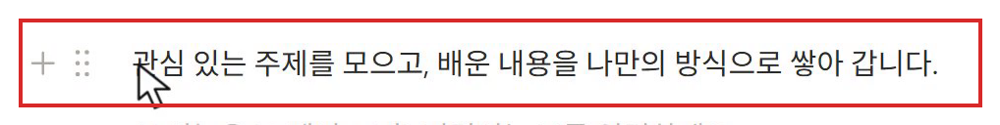
확인제목 아래에 소개가 있고, 글 왼쪽에서 블록 손잡이를 찾을 수 있습니다.
다음 단계 →안내 상자 만들기
노트를 쓰는 방법을 소개와 구별해 눈에 띄게 둡니다. 소개 아래 빈 줄에 /콜아웃을 입력하고 메뉴의 콜아웃을 선택합니다. 아이콘이 붙은 안내 상자에서 Ctrl+B로 굵게 쓰기를 켜고 첫 문장을 적으세요. Ctrl+B를 다시 눌러 굵게 쓰기를 끈 뒤 Shift+Enter로 같은 상자 안에서 줄을 바꾸어 설명을 적습니다.
하나의 주제에서, 나만의 지식으로
카드 하나에 주제 하나. 카드 안에는 글과 자료를 자유롭게 담고, 내용이 늘어나면 하위 페이지로 나누세요.
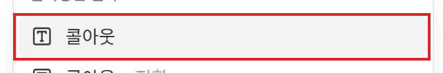
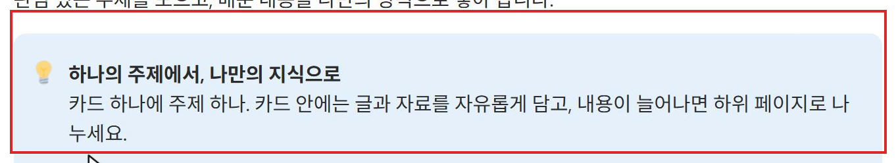
확인굵은 첫 줄과 설명이 같은 안내 상자 안에 있습니다.
다음 단계 →상자 색과 다음 줄
안내를 본문과 구별하고 다음 내용을 쓸 자리를 마련합니다. 안내 상자 왼쪽 손잡이를 눌러 색 → 파란색 배경을 선택하세요. 마지막 문장 끝에서 Enter를 눌러 빈 줄을 만든 뒤 Enter를 한 번 더 눌러 상자 밖으로 나옵니다.
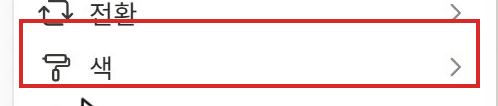
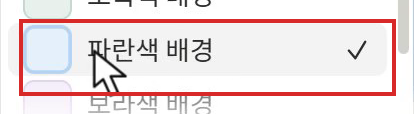
확인상자는 파란색이고 다음 입력 위치는 상자 밖입니다.
다음 단계 →주제 갤러리 만들기와 첫 주제 열기
주제 갤러리 만들기
상자 아래 일반 줄에 /갤러리를 입력하고 갤러리 보기를 선택합니다. 오른쪽 새 데이터베이스 창에서 비어 있는 새 데이터 소스를 누르세요. 목록 위 새 데이터베이스 제목을 눌러 주제 모음을 입력하고 Enter로 확정합니다. 주제마다 글을 담을 카드가 이 목록에 모입니다.
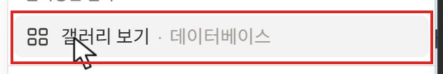
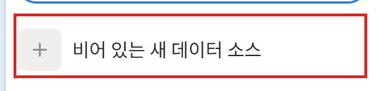
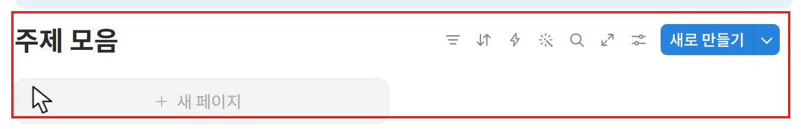
확인주제 모음이라는 갤러리와 새로 만들기 버튼이 보입니다.
다음 단계 →갤러리 보기 이름 바꾸기
같은 자료를 보는 방식에 알아보기 쉬운 이름을 붙입니다. 목록 오른쪽 조절점 모양 설정을 누릅니다. 위쪽 보기 이름을 주제 카드로 바꾸고 Enter를 누른 뒤 설정 창의 닫기를 누르세요. 주제 모음은 데이터 목록 이름이고 주제 카드는 그 목록을 보는 방식의 이름입니다.
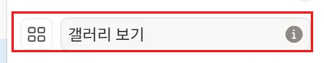
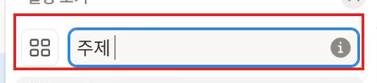
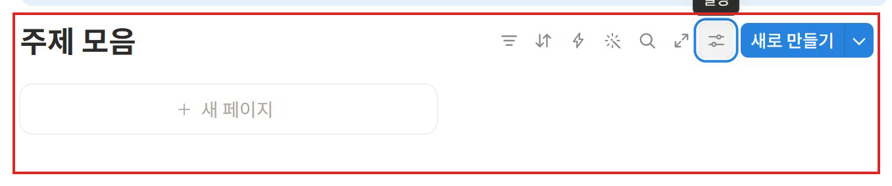
확인목록 이름은 주제 모음, 보기 이름은 주제 카드입니다.
다음 단계 →첫 주제 열기
목록 오른쪽 새로 만들기를 누릅니다. 오른쪽에 열린 페이지 왼쪽 위의 전체 페이지로 열기를 눌러 넓게 연 다음 제목과 소개를 적으세요. 제목 뒤 Enter로 본문에 내려갑니다.
Notion 익히기
글을 쓰고, 페이지를 연결하며 나에게 맞는 노트를 만들어 봅니다.
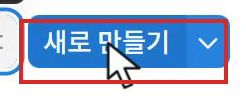
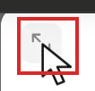
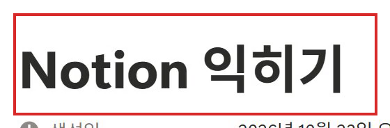
확인Notion 익히기 카드 안에 소개가 저장됩니다.
다음 단계 →주제의 안내 상자
주제 안에서 내용을 늘려 가는 방법을 안내합니다. 소개 아래 줄에 /콜아웃을 입력해 상자를 만듭니다. Ctrl+B로 첫 줄을 굵게 적고, 다시 Ctrl+B로 굵기를 끈 뒤 Shift+Enter로 설명을 이어 적으세요.
짧게 적고, 필요한 만큼 연결하기
한 페이지에서 시작해 내용이 쌓이면 하위 페이지로 이어 갑니다.
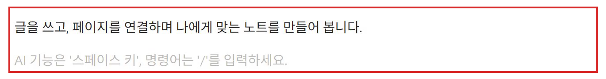
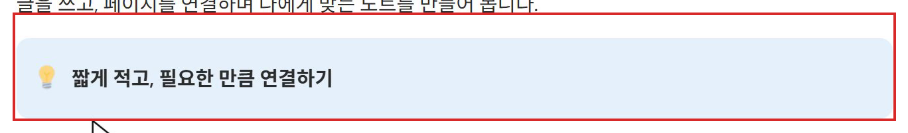
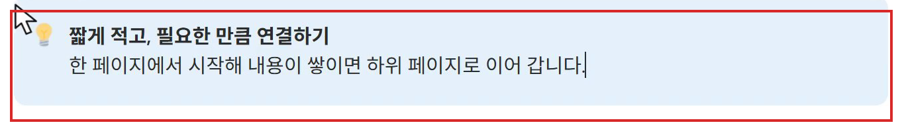
확인주제의 소개와 안내가 분리돼 보입니다.
다음 단계 →주제 소개와 하위 페이지
하위 페이지 자리 만들기
내용이 길어져도 주제 안에서 찾을 수 있게 하위 페이지를 둘 자리를 만듭니다. 안내 상자 손잡이의 색 → 파란색 배경을 선택합니다. 상자 마지막 줄에서 Enter 두 번으로 밖에 나온 뒤 /제목에서 제목 2를 고르고 나의 페이지라고 적습니다. Enter를 눌러 아래 줄로 내려가세요.
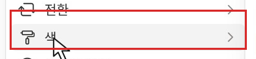
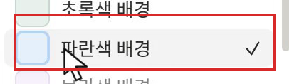
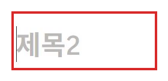
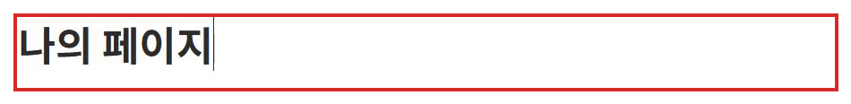
확인안내 상자 아래에 나의 페이지 구역 제목이 있습니다.
다음 단계 →첫 하위 페이지 만들기
글의 모양을 연습할 내용을 별도 페이지로 나눕니다. 나의 페이지 아래 줄에서 /페이지를 입력해 페이지를 고릅니다. 제목을 첫 페이지 꾸미기로 적고 Enter를 눌러 소개를 입력하세요. 위쪽 경로의 Notion 익히기는 부모 주제입니다.
첫 페이지 꾸미기
한 페이지 안에서도 글의 모양을 바꾸어 읽기 쉽게 정리할 수 있습니다.
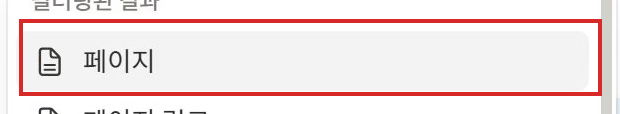
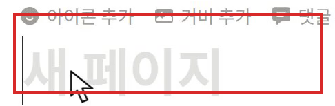
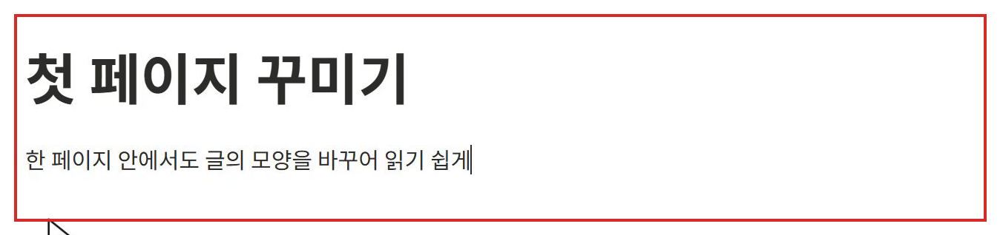
확인Notion 익히기 안에 첫 페이지 꾸미기가 들어 있습니다.
다음 단계 →제목과 글머리 목록
내용의 구획과 같은 성격의 항목을 구별합니다. 소개 아래 줄에서 /제목의 제목 2를 골라 오늘 써 본 방법을 적습니다. 다음 줄에서 /글머리의 글머리 기호 목록을 고르고 아래 세 문장을 한 항목씩 적습니다. 항목 사이에는 Enter, 마지막 빈 항목에서 Enter를 한 번 더 눌러 목록을 끝내세요.
제목으로 내용의 구획 나누기
같은 성격의 내용은 목록으로 정리하기
긴 설명은 토글 안에 접어 두기
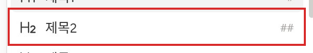
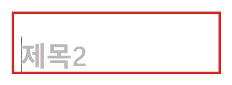
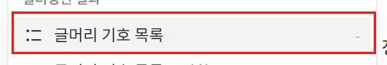
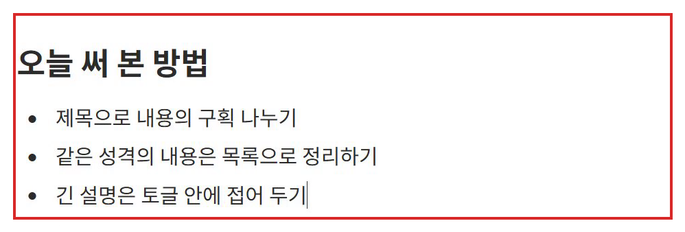
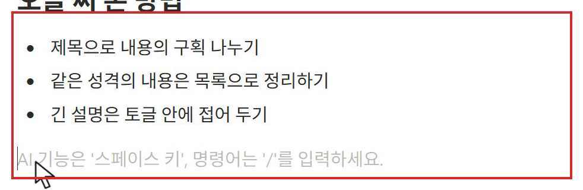
확인세 방법이 글머리 목록이고 그 아래는 일반 줄입니다.
다음 단계 →긴 설명 토글 · 다음에 할 일 · 목차
긴 설명을 토글로 접기
일반 줄에 /토글을 입력해 토글 목록을 고릅니다. 질문을 제목으로 적고 왼쪽 삼각형을 눌러 펼칩니다. 안쪽 빈 부분에 두 설명 문장을 적으세요.
제목과 굵은 글씨는 어떻게 다를까?
제목은 문서의 구획을 만들고 목차에도 표시됩니다. 굵은 글씨는 문장 안에서 중요한 말을 강조할 때 씁니다.
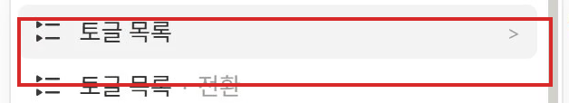
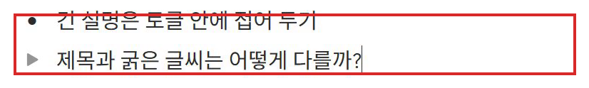
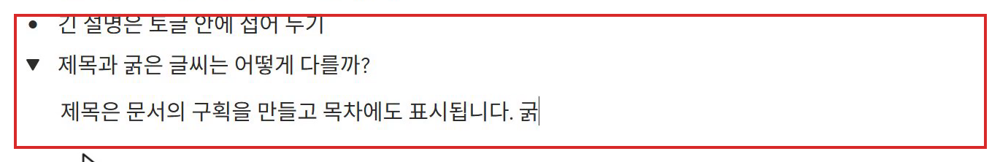
확인토글 제목 아래 안쪽에 설명이 들어 있습니다.
다음 단계 →접기와 펼치기 확인
삼각형을 눌러 접고 다시 펼쳐 설명이 남아 있는지 확인합니다. 다시 접은 제목의 문장 끝에서 Enter를 누르고, 새 빈 토글에서 Backspace를 눌러 일반 줄로 바꾸세요.
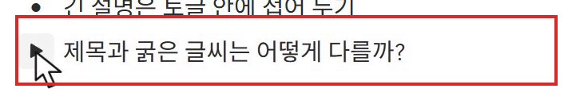
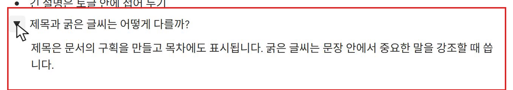
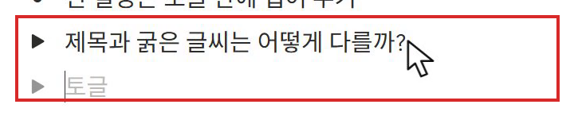
확인접었을 때는 질문만, 펼쳤을 때는 설명이 보이며 삭제되지 않았습니다.
다음 단계 →다음에 할 일 표시
다음에 해 볼 행동을 완료 여부와 함께 남깁니다. 일반 줄에 /구분선을 입력해 구분선을 넣습니다. 그 아래 /제목의 제목 2로 다음에 해 볼 것을 적고, 다음 줄에서 /할의 할 일 목록을 선택하세요. 두 항목을 적고 마지막 빈 항목에서 Enter를 한 번 더 누릅니다. 체크 상자는 실제로 완료했을 때 누르는 곳이므로 지금은 비워 둡니다.
내 관심 주제로 카드 하나 더 만들기
내용에 어울리는 하위 페이지 이름 붙이기
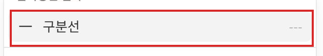
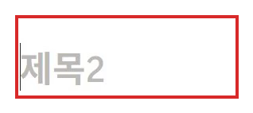
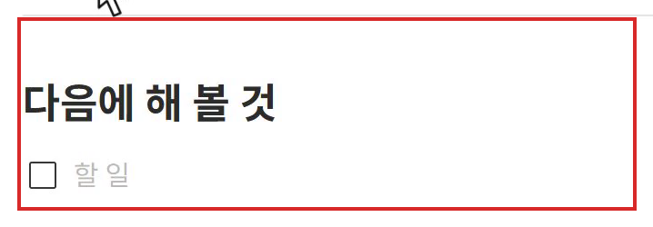
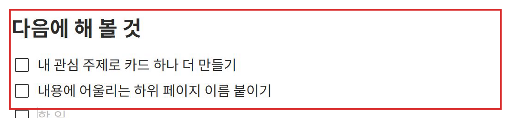
확인두 할 일이 빈 체크 상자와 함께 보입니다.
다음 단계 →목차로 필요한 곳 찾기
페이지 위로 올라가 첫 소개 문장 끝에서 Enter를 눌러 빈 줄을 만듭니다. /목차를 입력해 목차를 선택하세요. 자동으로 들어온 다음에 해 볼 것을 눌러 그 제목으로 이동합니다. 굵은 글씨가 아니라 제목 블록이 목차의 기준입니다.
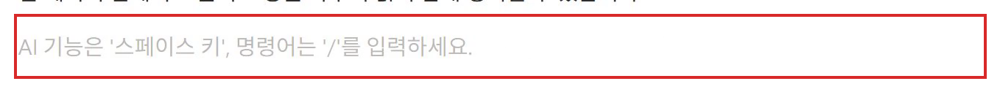
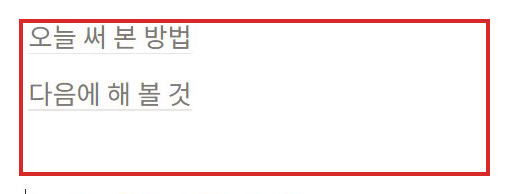
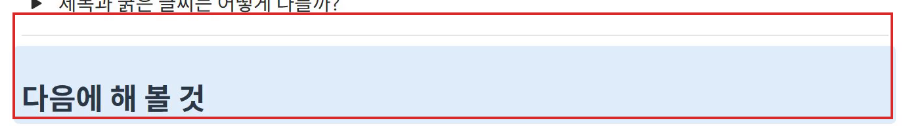
확인목차에 두 제목이 있고 항목을 누르면 해당 구역으로 이동합니다.
다음 단계 →번호 목록과 도움말 링크
두 번째 하위 페이지
페이지를 연결하는 방법은 별도 페이지에 모읍니다. 위쪽 경로 Notion 익히기로 돌아갑니다. 나의 페이지 제목 끝에서 Enter를 눌러 줄을 마련하고 /페이지를 선택하세요. 제목과 소개를 적습니다.
페이지 연결하기
내용이 길어지면 같은 주제 안에서 페이지를 나눠 봅니다.
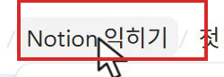
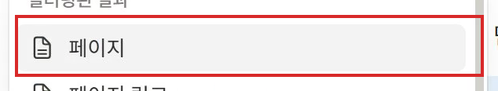
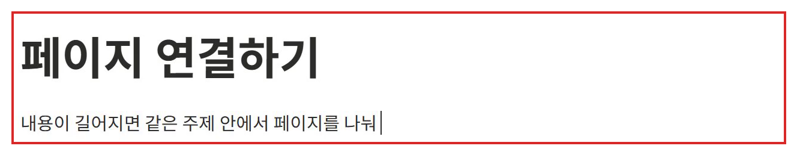
확인같은 부모 주제 안에 두 번째 하위 페이지가 생깁니다.
다음 단계 →순서를 번호 목록으로 남기기
앞뒤 순서가 있는 방법은 번호로 남깁니다. 소개 아래에 제목 2로 하위 페이지 만들기를 적습니다. 다음 줄에서 /번호의 번호 매기기 목록을 선택하고 아래 네 항목을 한 줄씩 입력하세요. 마지막 빈 항목에서 Enter를 한 번 더 눌러 일반 줄로 돌아갑니다.
주제 카드를 엽니다.
빈 줄에서 슬래시를 입력하고 페이지를 고릅니다.
페이지 이름을 붙이고 내용을 적습니다.
위쪽 경로를 눌러 부모 주제로 돌아옵니다.
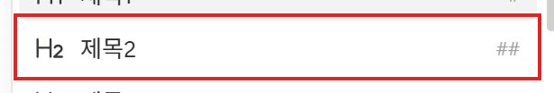
확인네 단계가 순서대로 번호를 갖습니다.
다음 단계 →안내와 참고 구역
방법과 참고할 자료를 구분합니다. 일반 줄에서 /콜아웃을 골라 안내를 적습니다. 마지막 줄에서 Enter 두 번으로 밖에 나온 뒤 제목 2로 필요할 때 찾아보기를 적고, 다음 줄에 Notion 글쓰기 도움말이라고 입력하세요.
페이지 이름은 내용에 맞게 자유롭게 붙이세요.
확인번호 목록 아래에 안내 상자와 참고 구역이 보입니다.
다음 단계 →도움말 출처 연결하기
도움말 문장 끝에서 Shift+Home으로 글을 선택하고 Ctrl+K를 누릅니다. 아래 공식 도움말 주소를 붙여넣고 Enter로 적용하세요. 오른쪽 방향키로 선택을 풀고 Enter로 내려가 출처를 남긴 이유를 적으세요.
https://www.notion.com/help/writing-and-editing-basics
글과 블록을 다루는 방법이 필요할 때 공식 도움말에서 다시 확인합니다.
확인도움말 글자에 링크가 있고, 바로 아래에 다시 볼 이유가 있습니다.
다음 단계 →두 하위 페이지를 안내 상자로 묶기
왼쪽 안내 상자 만들기
첫 하위 페이지가 하는 일을 짧게 안내합니다. 위쪽 경로 Notion 익히기로 돌아옵니다. 나의 페이지 제목 끝에서 Enter를 눌러 두 페이지 링크 위에 빈 줄을 만들고 /콜아웃을 고릅니다. 첫 줄은 Ctrl+B로 굵게, 설명은 굵기를 끈 뒤 Shift+Enter로 같은 상자 안에 적습니다. 손잡이의 색 → 회색 배경을 선택하세요.
01 · 글 정리하기
제목·목록·토글로 읽기 편하게 정리합니다.
확인첫 페이지를 담을 회색 상자가 두 링크 위에 있습니다.
다음 단계 →오른쪽 안내 상자 만들기
다른 하위 페이지도 같은 모양으로 안내합니다. 첫 상자 마지막 줄에서 Enter 두 번으로 밖에 나옵니다. /콜아웃을 선택해 두 번째 상자를 만들고 같은 방법으로 첫 줄과 설명을 입력한 뒤 회색 배경으로 바꿉니다.
02 · 내용 연결하기
하위 페이지와 링크로 내용을 이어 갑니다.
확인두 개의 회색 상자가 따로 만들어졌습니다.
다음 단계 →두 상자를 나란히 놓기
두 상자를 나란히 배치
두 번째 상자의 왼쪽 점 손잡이를 잡고 첫 상자 오른쪽으로 끕니다. 놓을 자리에 세로선이 보일 때 놓으세요. 가로선은 위아래 배치라서 두 단이 되지 않습니다.
확인두 회색 상자가 좌우로 나뉩니다.
다음 단계 →하위 페이지를 상자 안에 넣기
각 설명과 해당 페이지를 같은 상자에 묶습니다. 아래 첫 페이지 꾸미기의 손잡이를 잡아 왼쪽 상자 설명 아래로 옮깁니다. 페이지 연결하기도 손잡이로 오른쪽 상자 안에 넣으세요. 이름을 클릭하면 페이지가 열리므로 옮길 때는 왼쪽 손잡이를 사용합니다. 위쪽 경로 내 학습 노트로 돌아갑니다.
확인왼쪽과 오른쪽 상자 안에 해당 페이지 링크가 하나씩 있습니다.
다음 단계 →다른 주제에 메모와 자료 담기
지식 자산화 주제 만들기
홈의 주제 모음에서 새로 만들기 → 전체 페이지로 열기를 누릅니다. 제목과 소개를 아래처럼 적으세요. 이 문구는 노트를 사용하는 방법을 연습하는 입력이며, 자신이 실제로 배운 내용은 이후 이 주제에서 보완합니다.
지식 자산화
배운 것을 한 번 읽고 끝내지 않고, 필요할 때 다시 꺼내 쓰는 방법을 생각합니다.
확인두 번째 주제에 제목과 소개가 있습니다.
다음 단계 →지식 자산화 안내
메모를 남길 때 확인할 기준을 눈에 띄게 둡니다. 소개 아래에 콜아웃을 넣습니다. 첫 줄을 굵게 적고 굵기를 끈 뒤 Shift+Enter로 설명을 적으세요. 손잡이의 색 → 파란색 배경을 선택합니다.
모아 두는 데서, 다시 꺼내 쓰는 데까지
내 말로 정리하면 무엇을 알고 무엇이 아직 모호한지 드러난다. 출처도 함께 남겨 두면 나중에 다시 확인하기 좋다.
확인내 말로 정리하고 출처를 남기는 이유가 같은 상자에 있습니다.
다음 단계 →메모와 질문 남기기
내가 이해한 내용과 나중에 확인할 질문을 구별해 남깁니다. 상자에서 Enter 두 번으로 나옵니다. 제목 2로 내 말로 남기는 짧은 메모를 적고 글머리 목록에 세 문장을 입력하세요. 목록 밖에 토글 목록을 만들어 질문을 적고 삼각형으로 펼쳐 답을 입력한 뒤 접습니다.
기록의 목적은 다시 찾고 활용하는 것이다.
원문과 내가 이해한 내용을 구분해 남긴다.
나중에 다시 보고 싶은 질문도 함께 남긴다.
어떻게 다시 찾아볼까?
주제 이름을 분명하게 정하고 필요한 출처를 함께 남긴다.
확인메모 세 항목과 다시 찾아볼 질문이 남아 있습니다.
다음 단계 →표 보기 「전체 주제」 추가
같은 주제를 표로 보기
위쪽 경로 내 학습 노트로 돌아와 목록 위의 보기 이름에 마우스를 올려 나타나는 +를 누릅니다. 표를 고르고 이름을 전체 주제로 적어 완료를 누른 뒤 설정 창을 닫으세요. 주제 내용을 복제하지 않고 같은 주제 모음을 표로 보는 것입니다.
확인주제 카드와 전체 주제 두 보기에서 같은 주제 이름이 보입니다.
다음 단계 →속성 추가 위치
전체 주제 목록 오른쪽 조절점 모양 설정 → 속성 편집 → 새 속성을 엽니다. 속성은 각 주제에 붙이는 정보 칸입니다.
확인속성의 이름과 종류를 정하는 창이 열립니다.
다음 단계 →분야 · 이해도 속성 만들기
분야 속성 만들기
주제의 분야로 필요한 자료를 고를 수 있게 합니다. 새 속성 이름에 분야, 종류에 선택을 지정합니다. 옵션 추가에서 아래 세 항목을 각각 입력하고 Enter로 확정한 뒤 설정 창을 닫습니다.
도구
학습 방법
AI 실습
확인분야에서 도구·학습 방법·AI 실습을 고를 수 있습니다.
다음 단계 →이해도 속성 만들기
같은 설정 → 속성 편집 → 새 속성에서 이름을 이해도, 종류를 선택으로 정합니다. 옵션 추가에 세 항목을 넣고 닫으세요. 이해도는 평가 점수가 아니라 다시 볼 내용을 고르는 표시입니다. 판단하기 어려우면 비워 두어도 됩니다.
설명 못함
대충 앎
설명 가능
확인이해도에 세 단계가 있습니다.
다음 단계 →카드 그림과 크기 맞추기
카드 이미지 속성
카드 그림을 본문과 별도로 관리할 정보 칸을 만듭니다. 전체 주제의 설정 → 속성 편집 → 새 속성을 엽니다. 이름을 카드 이미지, 종류를 파일과 미디어로 정한 뒤 설정 창을 닫으세요.
확인각 주제에 그림을 넣을 카드 이미지 칸이 생깁니다.
다음 단계 →첫 주제의 분야와 이해도
주제 카드 보기에서 Notion 익히기를 열고 전체 페이지로 열기를 누릅니다. 위쪽 분야 옆 빈칸에서 도구를, 이해도 옆 빈칸에서 자신의 상태를 고르세요. 아직 설명할 수 없다면 설명 못함, 내용을 알아보지만 설명하기 어렵다면 대충 앎, 자신의 말로 설명할 수 있다면 설명 가능을 고릅니다.
확인주제의 분야와 자신이 고른 이해도가 속성에 보입니다.
다음 단계 →첫 카드에 그림 연결
글을 열기 전에도 주제를 알아볼 그림을 연결합니다. 위쪽 카드 이미지 빈칸을 누르고 파일 또는 이미지를 추가하세요에서 링크 탭을 엽니다. 아래 Notion 카드 그림 주소를 붙여넣고 파란 링크 버튼을 누르세요. Esc를 두 번 눌러 열린 창을 닫습니다.
https://raw.githubusercontent.com/uengine-oss/hyd-iot-edu/9d5fa180/workspace/%EA%B0%95%EC%9D%98%EC%A0%9C%EC%9E%91/%EC%A0%9C%EC%9E%91%EB%8F%84%EA%B5%AC/%EC%B4%AC%EC%98%81/notion/design/notion.png
확인카드 이미지 속성에 그림이 연결됩니다.
다음 단계 →두 번째 카드 속성
다른 주제에도 같은 정보 칸을 채워 목록에서 비교합니다. 위쪽 내 학습 노트로 돌아와 지식 자산화 카드를 전체 페이지로 엽니다. 분야는 학습 방법, 이해도는 자신의 상태로 고릅니다. 카드 이미지 → 링크에서 지식 자산화 그림 주소를 붙여넣고 링크를 누른 뒤 Esc로 닫습니다.
https://raw.githubusercontent.com/uengine-oss/hyd-iot-edu/9d5fa180/workspace/%EA%B0%95%EC%9D%98%EC%A0%9C%EC%9E%91/%EC%A0%9C%EC%9E%91%EB%8F%84%EA%B5%AC/%EC%B4%AC%EC%98%81/notion/design/knowledge.png
확인지식 자산화에도 분야·이해도·그림이 연결됩니다.
다음 단계 →갤러리에 그림 보이기
주제 목록에서 각 카드의 그림을 볼 수 있게 합니다. 홈의 주제 카드 보기에서 설정 → 레이아웃 → 카드 미리보기 → 페이지 속성 → 카드 이미지를 선택합니다. 카드 크기는 작게를 고르고 설정 창을 닫으세요.
확인갤러리 카드에 그림과 주제 이름이 보입니다.
다음 단계 →표에 필요한 속성만 보이기
목록에서 다시 볼 내용을 고르는 데 필요한 정보만 남깁니다. 전체 주제 보기에서 설정 → 속성 표시 여부를 엽니다. 생성일, 태그, 카드 이미지 옆 눈 아이콘으로 이 보기에서 숨긴 뒤 닫으세요. 속성을 삭제하는 동작은 아닙니다.
확인표에는 이름·분야·이해도가 남고 갤러리의 그림도 유지됩니다.
다음 단계 →검색하고 전체 목록 복원
주제가 많아져도 이름으로 원하는 기록을 찾습니다. 표 오른쪽 돋보기를 눌러 검색칸에 지식을 입력합니다. 해당 주제만 보이는지 확인한 뒤 검색어를 전체 선택해 Backspace로 지우세요. Esc로 검색칸을 닫고 주제 카드 보기로 돌아갑니다.
확인검색 중에는 지식 자산화가 보이고, 검색어를 지우면 전체 주제가 다시 보입니다.
다음 단계 →다음 주제를 위한 템플릿
새 주제 템플릿 열기
파란 새로 만들기 옆 아래 화살표를 눌러 새 템플릿을 선택합니다. 제목을 새 주제로 적고 Enter로 본문에 내려갑니다. 템플릿은 다음 주제를 만들 때 가져다 쓸 기본 모양입니다.
확인위쪽에 템플릿을 편집 중이라는 안내가 보입니다.
다음 단계 →템플릿 소개와 안내
새 주제마다 쓸 안내의 기본 모양을 만듭니다. 첫 줄에 소개를 적고 Enter를 누릅니다. 아래에 콜아웃을 넣어 굵은 제목과 일반 설명을 Shift+Enter로 구분하고 파란색 배경을 선택하세요.
이 주제에서 알고 싶은 것, 기억하고 싶은 것을 한 줄로 적어 보세요.
나의 주제를, 나의 방식으로
짧은 글부터 시작하세요. 아래 항목은 필요한 만큼 바꾸고 모두 채울 필요는 없습니다.
확인다음 주제에서 바꿀 소개와 안내 상자가 있습니다.
다음 단계 →템플릿 기록과 접힌 안내
템플릿에 기록할 항목과 바꾸는 방법을 둡니다. 상자 밖으로 나온 뒤 제목 2로 나의 기록을 적습니다. 글머리 목록 두 항목을 만든 뒤 일반 줄에서 토글 목록을 만들어 제목과 설명을 입력하고 접으세요. Esc로 편집 선택과 템플릿 창을 닫습니다.
기억하고 싶은 내용
다시 보고 싶은 자료
나에게 맞게 바꾸려면
항목 이름과 배치는 자유롭게 바꾸세요. 내용이 길어지면 하위 페이지로 나누세요.
확인템플릿에 기록 항목과 접힌 안내가 저장됩니다.
다음 단계 →템플릿으로 새 주제 시작하기
템플릿을 새 주제에 적용
다시 새로 만들기 옆 화살표에서 새 주제를 고릅니다. 열린 페이지를 전체 페이지로 열기로 넓힌 뒤 기존 제목을 클릭해 제목 글자 전체를 선택하고 자신의 주제로 바꾸세요. 아래 입력으로 먼저 모양을 확인한 뒤 자신의 주제와 소개로 바꿔 보세요. 소개 문장을 끝까지 선택해 자신의 내용으로 바꿉니다.
나만의 독서 기록
읽으면서 남기고 싶은 생각과 자료를 모읍니다.
확인템플릿의 구조는 유지하면서 제목과 소개는 자신의 주제가 됩니다.
다음 단계 →새 주제에 하위 페이지 추가
내 주제의 내용이 늘어날 때도 하위 페이지로 나눕니다. 나의 기록 제목 끝에서 Enter로 줄을 마련하고 /페이지를 선택합니다. 제목과 짧은 소개를 적은 뒤 위쪽 내 학습 노트로 돌아갑니다. 자기 주제에 맞는 페이지 이름과 내용을 사용해도 됩니다.
다음에 읽을 책
읽고 싶은 책과 그 이유를 짧게 남깁니다.
확인홈에서 새 주제 카드가 보이고 그 안에 하위 페이지가 있습니다.
다음 단계 →공유 · 게시 · 댓글 · 내보내기 설정
공유 권한 위치 확인
홈 오른쪽 위 공유를 엽니다. 초대할 사람을 적는 칸과 일반 사용 권한을 확인합니다. 링크 복사는 주소를 복사하는 버튼이며 접근 권한을 새로 주는 것은 아닙니다. 다른 사람에게 공개할 내용인지 아직 검토하지 않았으므로 초대를 보내지 않고 Esc로 닫습니다.
확인누가 볼 수 있는지 정하는 권한과 주소 복사를 구분합니다.
다음 단계 →공유와 게시 구별
공유 → 게시 탭을 엽니다. 웹에 공개하는 게시 버튼의 위치를 확인하세요. 정해진 사람에게 접근을 허용하는 공유와 웹에 공개하는 게시를 구별하며, 공개할 내용을 검토한 뒤 사용하는 기능이므로 지금은 Esc로 닫습니다.
확인게시 버튼을 누르지 않은 상태로 위치와 의미를 확인했습니다.
다음 단계 →댓글 위치 확인
홈의 소개 문장을 드래그해 선택하고 Ctrl+Shift+M을 누릅니다. 선택한 문장에 연결된 댓글 입력창을 확인한 뒤, 남길 의견이 없으므로 Esc로 닫으세요.
확인어떤 문장에 대한 의견인지 연결된 댓글 입력창을 찾을 수 있습니다.
다음 단계 →내보내기 형식 선택
홈 오른쪽 위 점 세 개 메뉴에서 더 보기 → 내보내기를 엽니다. 내보내기 형식에서 HTML을 선택하세요. HTML은 브라우저에서 읽는 형식입니다. 데이터베이스 보기는 현재 보기, 페이지 콘텐츠는 모든 콘텐츠로 둡니다.
확인작성한 노트를 HTML로 내보내는 설정 창이 열려 있습니다.
다음 단계 →내보내기 · 완성한 노트 둘러보기 · 마무리
하위 페이지와 함께 내보내기
같은 내보내기 창에서 하위 페이지 포함 스위치가 파란색인지 확인합니다. 회색이면 눌러 켜세요. 하위 페이지용 폴더 생성과 댓글 내보내기 옵션의 위치를 확인하고 내보내기를 누르세요. 지금 만든 학습노트만 받습니다. 내보낸 파일은 그 시점의 사본이어서 이후 Notion 수정이 자동 반영되지는 않습니다.
확인내보내기 설정 창이 닫히고 내 학습 노트 홈 제목과 소개가 보입니다.
다음 단계 →저장한 페이지 다시 열기
홈에서 Notion 익히기를 열고 전체 페이지로 열기를 누릅니다. 왼쪽 첫 페이지 꾸미기를 열어 제목·목록·토글·목차가 남아 있는지 확인하세요. 위쪽 경로로 돌아와 오른쪽 페이지 연결하기를 열어 순서와 도움말 출처가 남았는지 봅니다.
확인다시 연 두 하위 페이지에 작성한 내용과 출처가 보입니다.
다음 단계 →